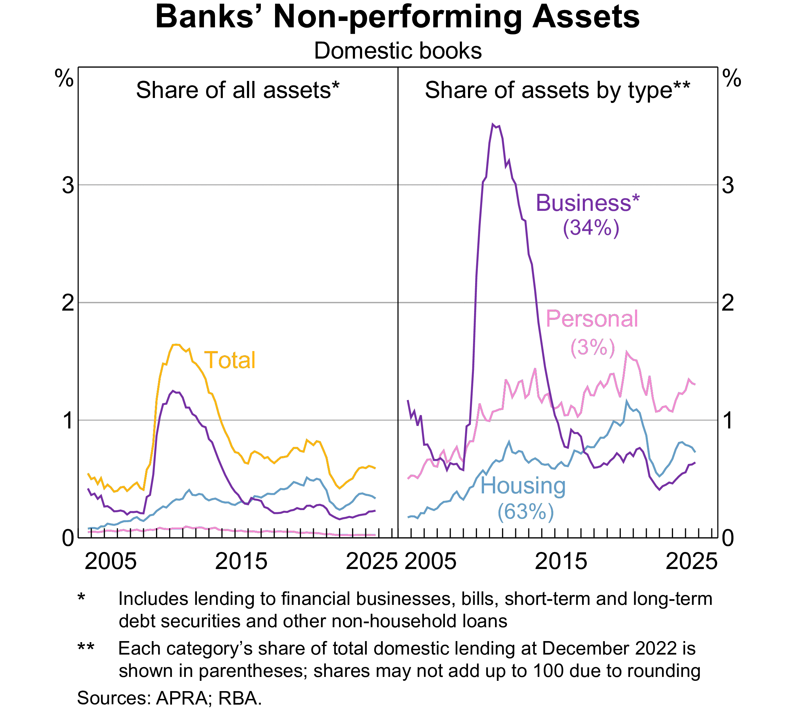
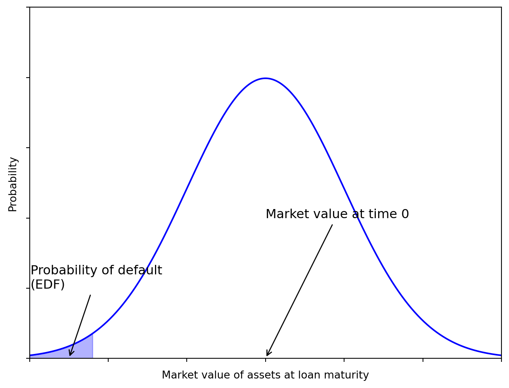

In Week 3, we discussed capital adequacy and the (Pillar 1 of Basel) minimum capital requirements, which involves the calculation of risk-weighted assets (RWA) that account for the various risks facing banks.
As suggested by Table 1 below, credit risk is likely the most significant risk factor, the risk that the promised cash flows from loans and securities may not be paid in full (e.g., borrower defaults).
Table 1: RWA of Australian banks in 2024 (source: Capital IQ)
CBA
Westpac
NAB
ANZ
Macquarie
RWA for credit risk
370,444
351,724
350,891
361,185
98,250
RWA for market risk
52,132
37,510
26,953
30,875
14,277
RWA for operational risk
44,975
48,196
36,102
49,650
17,512
Other RWA
0
0
0
4,872
0
Total RWA
467,551
437,430
413,946
446,582
130,039
FIs (banks) transform financial claims of household savers (e.g., deposits) into claims (e.g., loans) issued to corporations, individuals and governments.
FIs accept the credit risk on these loans in exchange for a fair return sufficient to cover the cost of funding to household savers and the credit risk involved in lending.
Roadmap: three questions, in order
Every lending decision a bank makes answers the same three questions in the same sequence. This lecture follows that sequence, so if you ever feel lost, ask yourself which question we are on.
The question
What we build
1
What do we earn if the loan performs?
The contractually promised return \(k\)
2
What is the chance it does not perform?
The probability of default, and \(E(r)\)
3
So do we lend, and to whom?
Credit scoring, rationing, and pricing models
Discussion: hold this question all lecture
Two friends each apply for a $500,000 mortgage at the same bank. One is approved, the other rejected. Yet the approved borrower pays the same rate as everyone else.
Why does the bank not simply charge the riskier friend a higher rate? By the end of the lecture you will have a precise, Nobel-prize-winning answer.
Getting this right matters because it determines both how a loan is priced and how much the bank is willing to lend to any one borrower.
Scope
This week is about one loan at a time. Next week we ask the harder question: what happens when you hold thousands of them and they all go wrong together (concentration risk).
Why it matters: two cautionary examples
Subprime and the GFC, 2007-09
Banks lent to weak borrowers during a housing boom, bundled the loans into mortgage-backed securities, and sold them on. When adjustable rates reset and defaults rose, the losses were everywhere at once.
The lesson: credit risk that is originated carelessly does not stay with the originator. It returns in Week 11.
US student loans: risk in slow motion
About $1.7 trillion owed by 42.6 million federal borrowers.
The COVID payment pause (Mar 2020 to Oct 2023) suspended repayments and delinquency reporting; collections resumed May 2025.
Result: roughly 10.6% of balances are now 90+ days delinquent, and the US average FICO score has fallen to 714, driven mainly by student loans returning to credit files.
The point of the second example
The payment pause did not change borrowers’ ability to repay. It changed whether anyone was measuring it. Unmeasured credit risk does not disappear; it accumulates quietly and then appears all at once when measurement resumes.
Same lesson as SVB’s held-to-maturity accounting in Week 3, in a different market.
Banks in Australia: non-performing assets

Figure 1: Non-performing assets of banks in Australia
The lending landscape
Four broad categories, with very different risk characteristics:
The assessment method follows the category. C&I loans are analysed one by one, with financial statements and negotiated terms. Consumer loans are too small and too numerous for that, so they are scored statistically and decided by rule. Keep this distinction in mind: it returns as retail versus wholesale shortly.
Two features worth knowing now
Both come from C&I lending and both reappear later in the unit.
Syndicated loans
A single loan provided by a group of FIs rather than one lender, so that no single bank carries the whole exposure.
Sets up the discussion of concentration limits in Week 7 and loan sales in Week 11.
Spot loans vs loan commitments
Spot loan: the full amount is drawn immediately.
Loan commitment (line of credit): a facility with a maximum size and a window during which the borrower may draw.
A commitment is a promise to lend later, at terms agreed now. It sits off the balance sheet until drawn, which makes it a Week 10 problem as well as a credit problem.
Residential mortgages, the largest category for Australian banks, vary mainly by loan size, loan-to-value ratio (LTV), maturity (often 25 to 30 years) and whether the rate is fixed or variable. Because the loan can outlive the borrower’s job, and because house prices can fall below the loan balance, mortgages combine credit risk with the interest rate risk of Week 4.
Returns on a loan
Contractually promised return on a loan
Pricing a loan means setting a rate that covers the bank’s funding cost and the borrower’s credit risk. We use the traditional return on assets approach.
BR reflects the FI’s marginal cost of funds: historically LIBOR, now SOFR in USD (LIBOR ceased 30 June 2023) and BBSW in Australia. Alternatively the prime rate, charged to the most creditworthy corporate customers.
But the quoted rate is not the whole story. Three adjustments matter:
Origination fee (\(f\)): charged upfront for processing.
Compensating balance (\(b\)): a share of the loan the borrower must leave on deposit, usually earning nothing, while paying interest on the full amount.
Reserve requirement (\(RR\)): the fraction of that deposit the bank must hold at the central bank, so it cannot lend it on.
The compensating balance, concretely
Borrow $100,000 with a 10% compensating balance, and you walk away with $90,000 while paying interest on $100,000. Your effective rate is higher than the one you were quoted.
Putting it together: the promised return formula
\[
1+k=1+\frac{\overbrace{f+(BR+\phi)}^{\text{interest and fees earned}}}{\underbrace{1}_{\$1\text{ loan}}-[\underbrace{b}_{\text{left on deposit}}\times \underbrace{(1-RR)}_{\text{that the bank can actually use}}]}
\]
Reading the denominator. For every $1 lent, the bank gets back \(b\) as a compensating balance, of which it must park \(RR\) at the central bank. So its true net cash outflow is \(1 - b(1-RR)\), not $1. A smaller outflow for the same income means a higher return.
Two things to try. Push the compensating balance up: \(k\) rises even though the quoted rate never changes, which is exactly why the fine print matters. Push the default probability to 10%: watch \(E(r)\) fall below the base rate, meaning the bank is lending at a loss without ever having changed its advertised price.
What actually moves the promised return today
Since 26 March 2020, reserve requirements (\(RR\)) have been eliminated for all depository institutions in the U.S. Australia abolished its own equivalent even earlier, in 1999.
Note
Both \(RR\) and the compensating balance \(b\) are now largely historical. The appendix at the end of these slides explains where they came from, where they survive, and why the underlying mechanism still matters.
Competitive lending markets have also made origination fees (\(f\)) and compensating balances (\(b\)) far less common.
Important
Strip those away and the formula collapses toward \(k \approx BR + \phi\). Once the base rate is set by the market, the credit risk premium \(\phi\) is the only real lever the bank controls.
Which raises the question the rest of this lecture answers: how big should \(\phi\) be? To know that, you need the probability of default.
Question 2: what if they do not pay?
The promised return \(k\) is what the bank earns if the loan performs. The expected return accounts for the chance it does not:
A 10% loan is really a 4.5% loan. And note the trap: a 5% default probability did not cost 5% of the return, it cost 5.5 percentage points, because the bank loses the principal as well as the interest.
Warning
Crucially, \(p\) is not independent of \(k\). Charging more can make repayment less likely, which is where the next section begins.
Retail vs wholesale credit decisions
Retail and wholesale decisions differ
A bank has two levers, not one: the price it charges, and the quantity it is willing to lend. Which lever dominates depends on the borrower.
Retail (consumers)
Small loans, and information is expensive relative to loan size. So decisions are largely accept or reject, and borrowers of the same product often pay the same premium regardless of their individual risk.
The bank controls risk by rationing quantity, not by pricing.
Example: two mortgage borrowers with very different LTVs can pay the same advertised rate. One simply gets a smaller loan, or none.
Wholesale (C&I)
Loans are large enough to justify individual analysis, so FIs use both price and quantity. Given a high enough premium, a bank may lend to a risky firm.
But raising the rate is not a free lever: a higher required repayment makes the loan harder to repay, so it raises the probability of default.
Two forces pulling against the price lever
Adverse selection. At a very high rate, safe borrowers walk away. Those who remain are the ones who know they are risky, or who never expected to repay.
Moral hazard. A high required repayment pushes the borrower toward riskier projects, because only a gamble can now cover the interest.
Both mean \(p\)falls as \(k\) rises. Recall \(1+E(r) = p(1+k)\): the bank is multiplying a bigger number by a smaller one.
Credit rationing, and a Nobel-winning explanation
Because expected return is hump-shaped, a profit-maximising bank will not simply raise the rate until the market clears. It stops at the peak and then rations by quantity instead: some creditworthy-looking borrowers are refused any loan, at any price they offer.
Research note: Stiglitz and Weiss (1981)
This is the central result of Stiglitz and Weiss (1981), one of the most cited papers in economics and part of the work for which Joseph Stiglitz shared the 2001 Nobel prize.
Their point overturns a basic intuition. In an ordinary market, excess demand is eliminated by a higher price. In credit markets it is not, because the price changes the quality of what you are buying. Interest is not merely the price of the loan; it is also a selection device and an incentive device.
The equilibrium therefore features rationing: borrowers willing to pay more are turned away, and the bank is behaving rationally in refusing them.
This finally answers the question from the start of the lecture: your two friends were not offered different rates, because for the riskier one there may be no rate that makes the loan profitable. The bank’s only remaining lever is yes or no.
Measurement of credit risk
It is all about information
To calibrate the credit risk exposure, FIs need to estimate the borrower’s default probability, which largely depends on their ability to collect and analyze information, cost-efficiently.
At the retail level, such information may be collected internally (e.g., past banking records) or externally (e.g., credit reports from rating agencies).
There are two main credit reporting bodies in Australia: Equifax and Experian (which acquired illion in 2024)
At the wholesale level, such information comes from multiple sources:
Large, public firms: financial statements, stock and bond prices, analysts’ reports, etc.
Advances in technologies make it easier to collect and analyze information of smaller borrowers.
Protection against credit risk
Pricing is not the bank’s only defence. Covenants are contract terms that restrict or require borrower actions in order to raise the probability of repayment.
Negative covenants limit what the borrower may do: take on new debt, sell assets, pay dividends.
Financial covenants cap ratios such as leverage or interest coverage, giving the bank an early trigger if the borrower deteriorates.
See one in the wild
The Cincinnati Bell credit agreement (2017), arranged by Morgan Stanley, sets out Affirmative Covenants in Article VII and Negative Covenants in Article VIII. Worth two minutes of scrolling to see how specific these get.
Covenants matter again in Week 11, where covenant-lite leveraged loans are a central worry.
Default risk models
Qualitative models
Banks use qualitative and quantitative models together; they are not mutually exclusive, and most credit decisions draw on several. We start with the judgement-based factors.
Borrower-specific factors are considered as well as market or systematic factors.
Specific factors include:
Reputation: implicit contract
Leverage (capital structure)
Volatility of earnings
Collateral
Market-specific factors include:
Business cycle
Level of interest rates
Note
A LOT more factors are considered in practice than we can discuss here.
Quantitative models
Credit scoring models use observed borrower characteristics to
either calculate a score representing the applicant’s default probability, or
sort borrowers into different default risk classes.
Scoring models might help to:
Establish factors that help to explain default risk
Evaluate the relative importance of these factors
Improve the pricing of default risk
Sort out bad loan applicants
More easily calculate reserve needs
Three broad types
Linear probability models
Logit models
Linear discriminant analysis
Credit scoring: linear probability models
The simplest approach: regress past repayment experience on borrower characteristics.
where \(X_{ij}\) are observable characteristics of borrower \(i\) (leverage, profitability, size) and \(\beta_j\) is the weight the data attaches to each.
Worked example. Suppose past defaults are explained by leverage (\(D/E\)) and the sales-to-assets ratio (\(S/A\)), and the fitted model is
Nothing in a linear model stops it producing a “probability” outside \([0,1]\). Using the same estimated model as the previous slide, a borrower with \(D/E = 0.1\) and \(S/A = 3\) gets
\[PD = 0.5(0.1) - 0.0525(3) = -0.108\]
A negative probability of default. That is not a rounding problem, it is a sign the functional form is wrong.
The logit model fixes this by construction. Rather than modelling the probability directly, it models the log-odds of default as a linear function of borrower characteristics:
Rearranging gives a probability that is guaranteed to sit strictly between 0 and 1, no matter what \(z\) is:
\[
PD = \frac{1}{1 + e^{-z}}
\]
Interactive: what the logistic function actually does
Code
viewof zval = Inputs.range([-6,6], {value:0,step:0.1,label:"Linear index z"})
Read the axis labels carefully
The input is the log-odds\(z\), which can be any number from \(-\infty\) to \(+\infty\). The output is a probability, squeezed into \([0,1]\).
\(z = 0\) gives \(PD = 50\%\) (even odds).
\(z = -3\) gives \(PD \approx 4.7\%\).
Extreme \(z\) flattens out: the curve never quite reaches 0 or 1.
Code
logistic = z =>1/ (1+Math.exp(-z))curve =Array.from({length:241}, (_, i) => {const z =-6+ i *12/240;return {z: z,pd:logistic(z)};})pdNow =logistic(zval)html`<div style="font-size:1.2em; margin-bottom:6px;"> z = <b>${zval.toFixed(1)}</b> maps to PD = <b style="color:#A6192E">${(pdNow*100).toFixed(2)}%</b></div>`
Code
Plot.plot({width:620,height:320,marginLeft:55,marginBottom:45,x: {label:"Linear index z (log-odds)",domain: [-6,6],grid:true},y: {label:"Probability of default",domain: [0,1],grid:true,percent:true},marks: [ Plot.ruleY([0.5], {stroke:"#ddd",strokeDasharray:"3,3"}), Plot.line(curve, {x:"z",y:"pd",stroke:"#A6192E",strokeWidth:2.5}), Plot.ruleX([zval], {stroke:"#999",strokeDasharray:"3,2"}), Plot.ruleY([pdNow], {stroke:"#999",strokeDasharray:"3,2"}), Plot.dot([{z: zval,pd: pdNow}], {x:"z",y:"pd",r:6,fill:"#A6192E"}) ]})
A common and expensive misreading
It is tempting to take the \(PD = 0.045\) from the linear model and push it through the logistic function. Do not. That gives \(1/(1+e^{-0.045}) = 0.511\), reporting a 4.5% borrower as a 51% default risk.
The two models are estimated separately. Logit coefficients are obtained by maximum likelihood on the log-odds scale; they are not the linear model’s coefficients, and the input \(z\) is an index, not a probability.
Probit is the same idea with the normal CDF in place of the logistic.
Credit scoring: linear discriminant analysis
Linear probability and logit models estimate a default probability (a value from 0 to 1) if a loan is made.
Discriminant models divide borrowers into high/low default risk classes based on observed characteristics.
Altman (1968)’s Z-score model, fitted on US manufacturing firms:
\[
Z = 1.2 X_1 + 1.4 X_2 + 3.3 X_3 + 0.6 X_4 + 1.0 X_5
\] where
\(X_1 = \text{Working capital / Total assets}\).
\(X_2 = \text{Retained earnings / Total assets}\).
\(X_3 = \text{Earnings before interest and taxes / Total assets}\).
\(X_4 = \text{Market value of equity / Book value of total liabilities}\).
\(X_5 = \text{Sales / Total assets}\).
The classification:
High default risk: \(Z<1.81\)
Indeterminate default risk: \(1.81<Z<2.99\)
Low default risk: \(Z>2.99\)
Weaknesses of credit scoring models
Weights in any credit scoring model unlikely to be constant over longer periods of time
Variables in any credit scoring model unlikely to be constant over longer periods of time
Models ignore hard-to-quantify factors such as borrower reputation
There is no centralised database on defaulted business loans for proprietary or other reasons
Discriminant models make broad distinction between borrower categories, that is, good and bad borrowers, yet in the real world various gradations of default exist, from non-payment or delay of interest payments (nonperforming assets) to outright default on all promised interest and principal payments
…
Credit scores in practice
In practice, credit scoring is most commonly encountered through a credit score assigned by credit bureaus, summarising a borrower’s creditworthiness as a single number.
FICO Score (United States)
Developed by Fair Isaac Corporation, the FICO score (range: 300–850) is used by approximately 90% of U.S. lenders.
Factor
Weight
Payment history
35%
Amounts owed (utilisation)
30%
Length of credit history
15%
New credit inquiries
10%
Credit mix
10%
FICO score bands:
Score
Rating
800–850
Exceptional
740–799
Very good
670–739
Good
580–669
Fair
< 580
Poor
Tip
The average U.S. FICO score is 714 (FICO, 2026), having drifted down as student-loan delinquencies returned to credit files. A score above 670 typically qualifies a borrower for standard loan products; below 580 may mean outright rejection or very high rates.
Credit scoring in Australia
Australia moved to Comprehensive Credit Reporting (CCR) in 2014, with mandatory participation by the four major banks from July 2019.
Before CCR: only negative events (defaults, bankruptcies, serious arrears) were reported to credit bureaus.
After CCR: positive data is also shared: repayment history, current credit limits, and open account information.
Note
CCR gives lenders a fuller picture of borrower behaviour. A borrower with no defaults but a history of on-time repayments is now distinguishable from one with simply no recorded negative events. This improves pricing accuracy and can expand credit access for “thin file” borrowers.
The main credit bureaus in Australia are Equifax and Experian (which acquired illion in 2024).
Equifax score: 0–1,200 (higher is better)
Experian score: 0–1,000 (illion scores, now under Experian, use the same range)
Tip
CCR is a good example of how regulatory change can fundamentally shift the data available for credit scoring models, and therefore the accuracy of the models themselves.
Australian credit bureaus: history and ownership
Equifax (formerly Veda)
1968: Credit Reference Association of Australia (CRAA) established by the finance industry
2016: Acquired by Equifax Inc. (NYSE: EFX) for USD 1.9 billion; now Australia’s largest bureau by market share
illion (formerly Dun & Bradstreet)
1986: Dun & Bradstreet begins Australian credit bureau operations
2015: D&B divests Australian/NZ operations to private equity firm Archer Capital (~AUD 220M)
2018: Rebrands to illion
2024: Acquired by Experian plc (LSE: EXPN) for AUD 820M
Experian
Launched Australian credit bureau in 2011 as a joint venture with six Australian banks
Part of Experian plc (LSE: EXPN), incorporated in Ireland; operations in 30+ countries
Note
The 2024 acquisition of illion by Experian has consolidated Australia from three credit bureaus to two dominant players: Equifax (US-owned, NYSE: EFX) and Experian (Ireland-incorporated, LSE: EXPN). Both are foreign-owned, which raises questions about data sovereignty for Australian borrowers’ financial information.
Machine learning in credit scoring
Traditional scoring models (linear probability, logit, discriminant analysis) have been increasingly supplemented by machine learning (ML) methods.
Common approaches include:
Gradient boosting (XGBoost, LightGBM): strong performance on tabular credit data, widely used in fintech lending
Random forests: robust to outliers, handles non-linear interactions between variables
Neural networks: used where unstructured data is available (e.g., transaction patterns, text from loan applications)
Key challenges with ML in credit decisions:
Explainability: regulators require lenders to provide reasons for adverse credit decisions (e.g., under Australia’s National Consumer Credit Protection Act). A “black box” model cannot easily satisfy this.
Fairness and bias: ML models trained on historical data can inadvertently encode demographic discrimination if protected attributes are correlated with predictors.
Data and stability: ML models need large training datasets and regular retraining as economic conditions evolve.
Note
The trade-off between predictive accuracy and interpretability is a central tension in modern credit risk management. In practice, many banks use simpler, interpretable models for regulatory decisions and more complex ML models as a second-layer check.
Newer models of credit risk measurement and pricing
Beyond credit scoring models, researchers and practitioners have developed more sophisticated approaches to measuring and pricing credit risk on individual instruments.
Approach
Core idea
Term structure (reduced-form)
Extract implied default probabilities from the yield spread between risky bonds and risk-free government bonds
Mortality rate
Estimate default rates from historical cohort data, analogous to actuarial mortality tables used by insurers
RAROC
Evaluate loan profitability relative to the risk capital it consumes: \(RAROC = \frac{\text{Net income on loan}}{\text{Loan risk}}\); approve if \(RAROC >\) hurdle rate
Option/structural models
Treat equity as a call option on firm assets (Merton 1974); derive default probability from observable market prices. The KMV/Moody’s model uses this to compute the expected default frequency (EDF) for large corporations.
Note
These models are widely used in practice by banks, credit rating agencies, and risk management firms. They are not assessed in this unit. The key takeaway is that modern credit risk measurement draws on both statistical and financial-theoretic tools.
Two ways to infer a default probability
Both answer the same question, from opposite directions: one looks at prices today, the other at history.
Term structure (forward-looking)
A risk-neutral lender should be indifferent between a government bond and a risky loan:
\[
\underbrace{p(1+k)+(1-p)(1+k)\gamma}_{\text{expected return on the risky loan}} = \underbrace{1+i}_{\text{risk-free}}
\]
where \(\gamma\) is the recovery rate. Everything except \(p\) is observable, so solve for the implied default probability\((1-p)\).
Strength: uses current market prices, so it updates instantly. Weakness: it is a risk-neutral probability, which embeds a risk premium and so overstates the true default rate.
Mortality rates (backward-looking)
Borrowed directly from life insurance: do not predict the individual, study the cohort.
For grade B bonds, the marginal mortality rate in year 1 is
\[
MMR_1 = \frac{\text{value of grade B bonds defaulting in year 1}}{\text{value of grade B bonds outstanding in year 1}}
\]
Repeat for \(MMR_2, MMR_3, \ldots\) to build a curve.
Strength: grounded in what actually happened. Weakness: backward-looking, and highly sensitive to which years you sample.
Note
Insurers do not forecast your health; they price a pool of people who look like you. Mortality-rate credit analysis is the same move applied to borrowers.
RAROC
Risk-adjusted return on capital (RAROC) was pioneered by Bankers Trust (acquired by Deutsche bank in 1998).
\[
RAROC = \frac{\text{One-year net income on a loan}}{\text{Loan risk}}
\] where \[
\text{One-year net income on loan} = (\text{Spread} + \text{Fees}) \times \text{Dollar value of the loan outstanding}
\] and Loan risk can be measured by, for example, duration. \[
\frac{\Delta LN}{LN} = - D_{LN} \frac{\Delta R}{1+R}
\] so that \[
\underbrace{\Delta LN}_{\text{dollar risk exposure}} = - \underbrace{D_{LN}}_{\text{duration of loan}} \times \underbrace{LN}_{\text{loan amount}} \times \underbrace{\frac{\Delta R}{1+R}}_{\text{shock}}
\]
Loan approval if RAROC > benchmark return on capital.
Option models: default as a decision, not an accident
The models so far look at symptoms: ratios, scores, past defaults. Merton (1974) asks a more basic question. When does a firm default?
Think about what limited liability actually gives shareholders. At the loan’s maturity the firm owes \(B\) and its assets are worth \(A_T\):
If \(A_T > B\): repay the debt, keep the difference.
If \(A_T < B\): walk away, hand the assets to the lender, and lose no more.
That payoff, “keep the upside, cap the downside”, is precisely a call option on the firm’s assets with strike \(B\).
Two consequences follow immediately:
Default is not bad luck, it is an option being exercised. It happens when asset value falls below what is owed.
Since equity is traded, the stock market is continuously pricing that option. We can work backwards from the share price to what the market thinks of the firm’s assets and their volatility.
Why practitioners care
Ratios come from financial statements, which are quarterly, backward-looking and occasionally creative. This approach uses market prices, which update every second. It is the reason the method was commercialised so quickly.
From asset value to a default probability
The firm defaults if assets end up below the debt. So ask: how far is the firm from that point, measured in standard deviations?
This distance to default combines the three things that matter, and nothing else:
\(A/B\): how much asset cushion sits above the debt (leverage)
\(\sigma\): how violently assets move (business risk)
\(\mu, \tau\): expected drift over the horizon
Convert the distance into a probability:
\[
PD = N(-DD)
\]
A firm 4 standard deviations from its default point is far safer than one at 1, even if their accounting ratios look identical.
From DD to EDF
Moody’s KMV commercialised exactly this, but with one pragmatic change: instead of trusting the normal distribution in the extreme tail, it maps the distance to default onto a large historical database of actual defaults. The result is the Expected Default Frequency (EDF), an empirical default rate for firms observed at that distance.1
EDF feeds directly into next week’s portfolio models, where you will use it alongside LGD to compute expected loss.
The picture behind the formula
The distribution below is the firm’s asset value at the loan’s maturity. The debt level sits in the left tail.
The distance from today’s asset value to that default point, scaled by volatility, is the distance to default.
The shaded area is the probability of landing below it: the default probability, or empirically, the EDF.
Everything a bank can do to a borrower moves one of two things: it shifts the distribution right (more assets, less debt) or narrows it (less volatile business).
Code
import matplotlib.pyplot as pltimport numpy as npmu =3# meansigma =1# standard deviationx = np.linspace(0, 6, 300)y = (1/ (np.sqrt(2* np.pi) * sigma)) * np.exp(-0.5* ((x - mu) / sigma) **2)fig, ax = plt.subplots(figsize=(8, 6))ax.plot(x, y, color='blue')x_fill = np.linspace(0, 0.8, 100)y_fill = (1/ (np.sqrt(2* np.pi) * sigma)) * np.exp(-0.5* ((x_fill - mu) / sigma) **2)ax.fill_between(x_fill, y_fill, color='blue', alpha=0.3)ax.annotate('Probability of default\n(EDF)', xy=(0.5, 0.0), xytext=(0.01, 0.1), arrowprops=dict(facecolor='black', arrowstyle='->'), fontsize=12)ax.annotate('Market value at time 0', xy=(3, 0.0), xytext=(3, 0.2), arrowprops=dict(facecolor='black', arrowstyle='->'), fontsize=12)# Set limits and labelsax.set_xlim([0, 6])ax.set_ylim([0, 0.5])ax.set_xticklabels([])ax.set_yticklabels([])ax.set_xlabel('Market value of assets at loan maturity')ax.set_ylabel('Probability')# Show plotplt.show()

Figure 2: The default probability is the shaded area: the chance that asset value at maturity falls below the amount owed.
Finally…
Key takeaways
Credit risk is the biggest risk on a bank’s balance sheet. It dominates RWA for every major Australian bank.
Promised ≠ expected return: \(k\) builds in the base rate, risk premium, fees and compensating balances; \(E(r)\) discounts \(k\) by the probability of repayment.
Retail credit is rationed by quantity; wholesale credit is priced by risk, and raising rates can lower expected returns via adverse selection and moral hazard (Stiglitz and Weiss 1981).
Credit scoring condenses borrower information into a default prediction: linear probability, logit (which models the log-odds, not the probability), Altman’s Z, and modern ML with its explainability and fairness constraints.
Market-based models extract default probabilities from prices: yield spreads (term structure), historical cohorts (mortality rates), or equity-as-a-call-option (Merton/KMV EDF).
RMA provides average balance sheet and income data for more than 400 industries, common ratios computed for each size group and industry, five-year trend data, and financial statement data for more than 100,000 commercial borrowers.
If you’re into Math and would like to see some code,
Stiglitz, Joseph E, and Andrew Weiss. 1981. “Credit Rationing in Markets with Imperfect Information.”The American Economic Review 71 (3): 393–410.
Appendix
Appendix: whatever happened to reserve requirements?
A reserve requirement is a minimum fraction of deposits that a bank must hold at the central bank, earning little or nothing. It began as a prudential liquidity rule, became a monetary policy lever, and was always an implicit tax on deposit funding.
Jurisdiction
Position today
Australia
None
United States
0% since 26 March 2020
Canada
Zero since 1994
United Kingdom
No reserve-ratio system
Euro area
1% since 2012
China
~7.5%, still actively used
Australia’s own history
A Statutory Reserve Deposit requirement (reaching 7%) applied to trading banks for decades.
Replaced in September 1988 by a 1% Non-Callable Deposit, which reduced the incentive to raise funds offshore.
Non-Callable Deposits were abolished in July 1999.
So Australia has had no reserve requirement for over 25 years.
Why the rich world let them go
Central banks now steer the economy through the price of money (the policy rate), not its quantity. An unremunerated requirement mostly taxed regulated banks and pushed activity toward competitors who faced no such rule.
China is the live exception. The PBOC still raises and cuts its ratio as an active policy instrument, which is worth remembering whenever you read that reserve requirements are obsolete. They are obsolete in the jurisdictions that stopped using them, and the euro area is currently debating a return to 2%.
Appendix: whatever happened to compensating balances?
A compensating balance requires the borrower to leave part of the loan on deposit, earning nothing, while paying interest on the full amount. Borrow $100,000 at 10% with a 20% balance and you have $80,000 to spend and a $10,000 interest bill.
Where they came from: Regulation Q
From 1933 to 2011, Regulation Q prohibited US banks from paying interest on demand deposits (you meet it again in Week 9). A bank therefore could not compete for corporate deposits on rate.
The workaround was to attach the deposit to the loan. The borrower got credit, the bank got free funding, and the loan’s effective yield rose without touching the advertised rate. That is exactly what the \(b\) term does in our formula.
Why they have faded
Dodd-Frank repealed Regulation Q in 2011, so banks can now simply pay interest on business deposits.
Competition and disclosure pushed lending toward transparent, explicit pricing.
US commercial banking increasingly uses an earnings credit rate instead: balances offset service fees rather than being locked away.
In Australia, compensating balances were never standard practice.
Why we still teach the formula
The instruments retired; the mechanism did not.
Anything that reduces the bank’s net cash outflow while leaving its income unchanged raises the effective return. That logic now reappears as establishment fees, minimum-balance conditions, offset-account rules, cross-sell requirements and package discounts.
The practical lesson is the same one the formula teaches: the advertised interest rate is an unreliable guide to what a loan actually costs the borrower, or earns the bank.